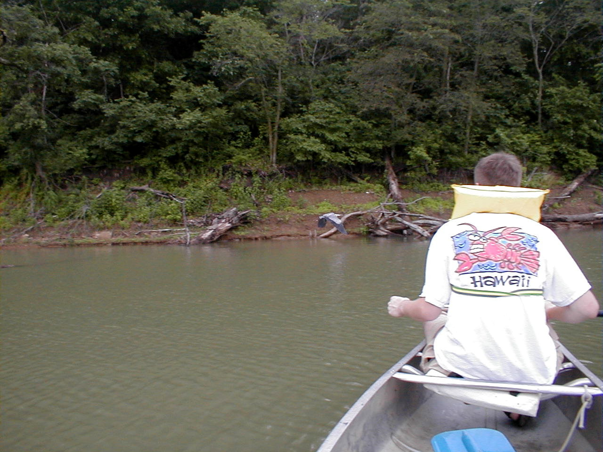

Day 24: June 5, Abilene, KSPrevious Day - Home - Next Day Photo of the DayCanoeing on Clinton Lake, note the bird leaving his perch. Keegan's LogDay 24: June 5, Abilene, KS Weather: Cool, Scattered showersToday was our third rest day, and a much needed rest at that. I spent the day visiting with Holly, seeing some of the Kansas sights in the process. We spent the morning shopping in downtown Lawrence, the old main street has some very nice shops, even two different bike shops! We stopped in a café with great hot chocolate and mediocre sandwiches, we also found some excellent ice cream and found enough change for two cones. It sprinkled for much of the morning, but when it looked like it was clearing we decided to head for Clinton Lake. After finally finding Clinton Lake, and then finally finding the marina, we rented a canoe and spent an hour cruising the large lake. The bugs were thick enough we had to fight them away with out oars, but we found a nice cove and had a snack out on the water before bringing the oat back to the marina. We saw parts of tomorrow's route, the terrain becomes a lot hillier that what we've seen of Kansas so far, we start getting into the rolling hills of Missouri. Holly and I had dinner with dad, Lynn, and Ethel at the Burger King in Abilene, Holly promised to return to meet the gang tomorrow for dinner. She headed back to Lawrence to go to work tomorrow while dad and I relaxed a bit to prepare for tomorrow's ride. Tomorrow is a century, 105 miles, with almost 2500 feet of climbing to boot. It looks like the winds will be light, we only hope that the rain can wait until we are safely in the hotel in Topeka. Phil's LogI was just standing on the balcony exchanging words with a robin. First one seen, it's a good day for him. The worms and grubs are coming to the surface to escape the drowning in the saturated soil of Abilene. This motel has a thin roof, and waking to the sound of rain was most pleasant. Thankfully, this is a day off. Yesterday's ride started off just where that of the previous ended. Winds, direct headwinds. We prearranged a pace line before we ever rolled from the motel, and struggled as we headed eastward. There were couple of stops for "butt breaks" at about 10 mile intervals, and we were doing the same 1/2 mile each pulling the train. Winds were about 120 degrees which made the pace line less effective. At 22 mils the course made a now famous left turn to due north, the pace line immediately disintegrated and we all took off with our quartering tailwind, Keegan and I averaging about 20 mph. What an incredible difference! We enjoyed rolling the next 40+ rolling miles, past farms and occasional dog breeding farms? It turns out that they are raising greyhounds, and there is a Greyhound Hall of Fame here, which I will skip. Hours later... The Museum of Independent Telephony was fascinating. It is part of the county museum, but more extensive than one would guess and very professionally presented. There were quite a number of wooden manual switchboards recently removed from service, and and exhaustive presentation of battery and battery-less telephones and support equipment that was used on the prairie not so long ago. It was also noted that young men were the first telephone operators. But they tended to provoke the customers and a few companies tried young women. It was discovered that they were easier to train, and the customers were much happier. They then let the boys work at stringing and maintaining the wires. "The telephone is a scientific toy..., interesting, of course, but it can never become a practical necessity..." 1877 trade journal There was also an interesting collection of irons - Proctor Silex types except hat they were to have been heated on wood stoves, on their own little fires in the summer, and some that were designed even to have a charcoal fire inside them. There were also gasoline fired irons (with instructions not to overfill them), irons with a hose to the gas mains, and special irons made for ironing pleats or hats. All of these were collected by a woman who had inherited her grandmother's iron and continued collecting. There were even electric irons. A group of us met on the grounds of the Dwight D. Eisenhower Museum and went to the Kirby House Restaurant for lunch. This is located in an elegantly restored house, and the food fit the aura. The strawberry soup was excellent, and the women in the group raved about the coconut walnut bread. Then we wandered about downtown Abilene until it rained, again. A slow day. The evening news is full of tornado warnings, and rain has just started hitting the roof again. Keegan was visiting with Holly today and is due back with here momentarily, some of the riders would like to meet Holly and will join us for dinner. Tomorrow - we hope the rain passes. We have a 105 mile day with, we are told, a fair amount of climbing. Let's hope for tailwinds this time. The weather system does seem to be changing. |
{kind=link}